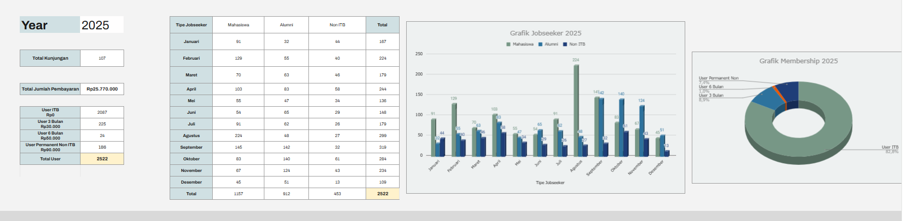

Alya Rizqita.
Menghadirkan Keteraturan dalam Dinamika Layanan Publik.
Terbiasa menangani operasional bervolume tinggi di ITB Career Center. Memadukan keakuratan manajemen data dengan efektivitas komunikasi lintas kanal untuk menciptakan layanan yang presisi dan profesional.
Bukti Kinerja & Operasional
< 24 Jam
Resolusi respons komunikasi publik. Didukung oleh Effective Communication dan Problem-solving tingkat tinggi.
200+ Member
Aktivasi anggota per bulan. Dieksekusi dengan pendekatan manajemen data yang sangat Detail-oriented.
50+ Sesi
Koordinasi jadwal konseling per bulan (95% Hadir). Mengandalkan Teamwork & Facilitation bersama para psikolog.
Visualisasi Analitik Laporan
Mengelola ribuan entri data pencari kerja dan menyajikannya dalam analitik terstruktur untuk mendukung keputusan pimpinan (Data disamarkan).

Arsitektur Alur Layanan Konseling
Penerapan Leadership & Adaptability dalam merancang alur kerja yang sistematis agar operasional berjalan tanpa hambatan.
Penerimaan & Validasi
Verifikasi akurasi data pendaftar sebelum diproses ke tahap selanjutnya.
Alokasi Penjadwalan
Pencocokan jadwal presisi tanpa bentrok waktu antara peserta dan psikolog.
Konfirmasi Eksekusi
Pengawalan tingkat kehadiran via komunikasi proaktif ke semua pihak.
Rekapitulasi Evaluasi
Penyusunan laporan akhir volume sesi dan feedback untuk manajemen.